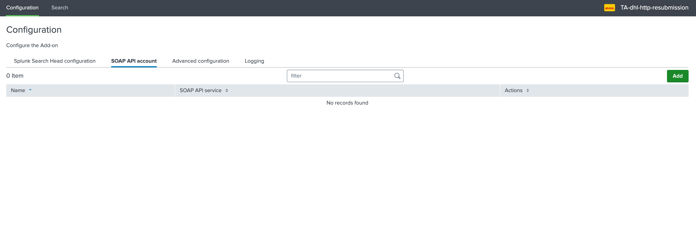
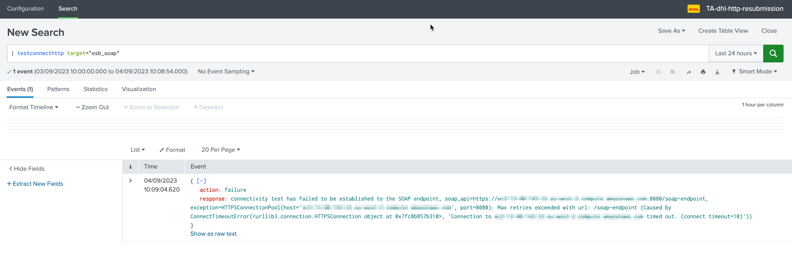
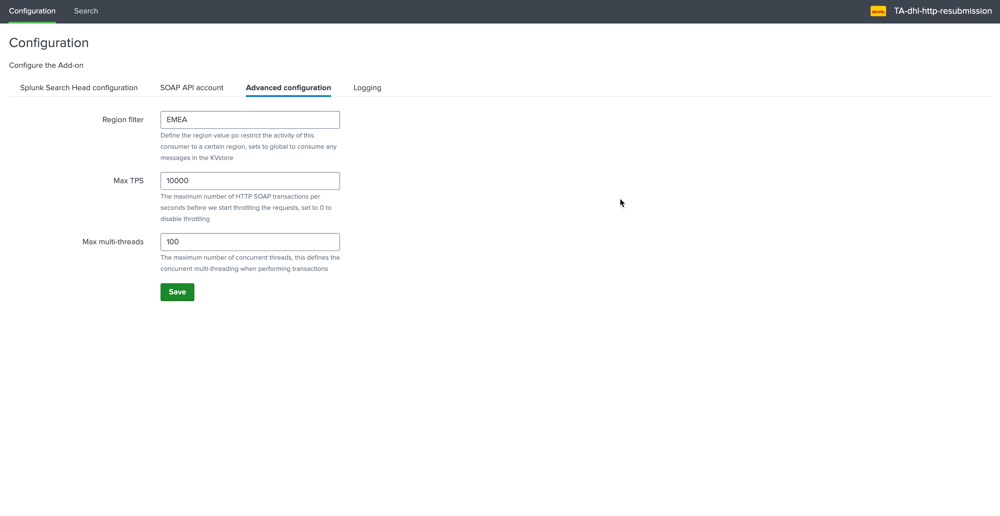

HTTP SOAP configuration¶
The configuration of the SOAR HTTP(s) resubmission can be summarised as following:
The configuration stands on the Heavy Forwarder consumers via the creation of one or more SOAR API accounts in the
TA-dhl-http-resubmissionapplicationA SOAR API account defines the SOAR API target, as well as the authentication information and additional technical information for this account
Once the account has been defined, the consumer can start consuming pending messages and submit these to the SOAR API target
Configuration of a SOAP API account¶
On the Heavy Forwarder, access to the configuration UI:
{kind=link}
Add a new account, the following information are required:*
Item |
Description |
|---|---|
Name |
This is the account identifier which will be used when submitting messages for resubmission purposes |
SOAP API service url |
The SOAP API service url, in the format https://<service>:<port>/<SOAP service> |
Username |
The username for the authentication purposes using basic authentication via SSL |
Password |
The username for the authentication purposes using basic authentication via SSL |
Timeout |
The max timeout value in seconds to be applied when performing calls to this SOAP API |
{kind=link}
Checking the connectivity¶
You can perform a connectivity check from the Heavy Forwarder consumer to the SOAP API endpoint account using the following builtin SPL command:
| testconnecthttp target=<account_name>
The command also allows to specify the type of HTTP call (defaults to get):
| testconnecthttp target="account_name" soap_test_request_type=<The soap_test_request_type, valid options: get|head>
Example of a failure, in this example the service cannot be reached from the network perspective:
{kind=link}
Example of a success, the response is the provide by the target:
If the connectivity is successful, the consumer is ready to start consuming and submitting to the SOAP API.
You can access the logs from the testconnecthttp command as follows:
index=gbs_its_pds_infra_httpsubmission sourcetype="dhl_http_resubmission:commands:testconnecthttp"
Advanced configuration¶
The advanced configuration provides additional options that can be defined on a per consumer basis:
{kind=link}
Item |
Description |
|---|---|
Region filter |
Define the region value po restrict the activity of this consumer to a certain region, sets to global to consume any messages in the KVstore |
Max TPS |
The maximum number of MQ transactions per seconds before we start throttling the requests |
Max multi-threads |
The maximum number of concurrent threads, this defines the concurrent multithreading when performing transactions |